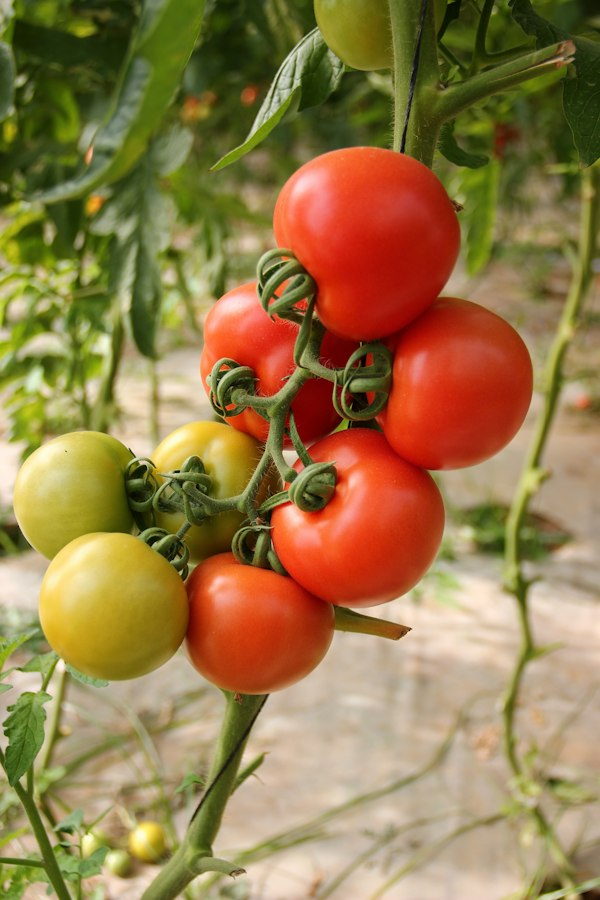
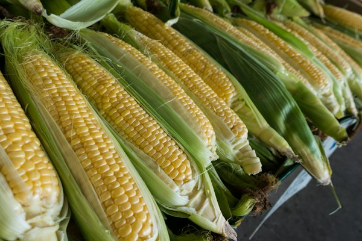
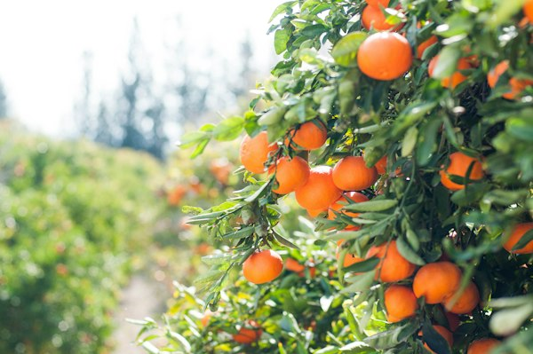
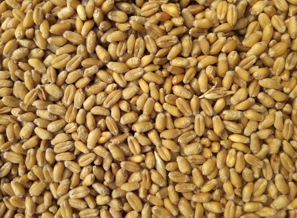
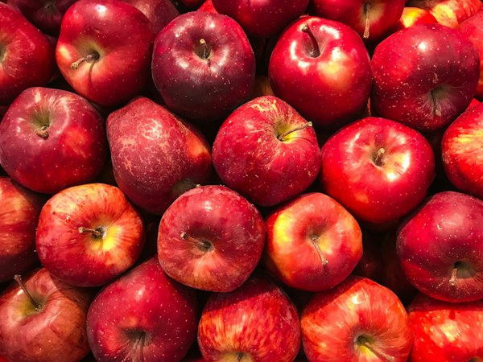
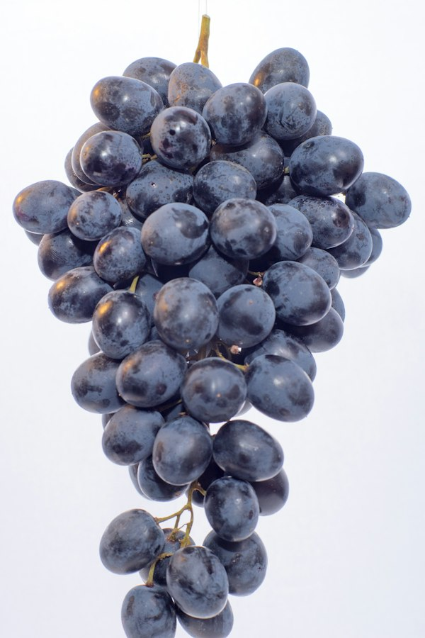
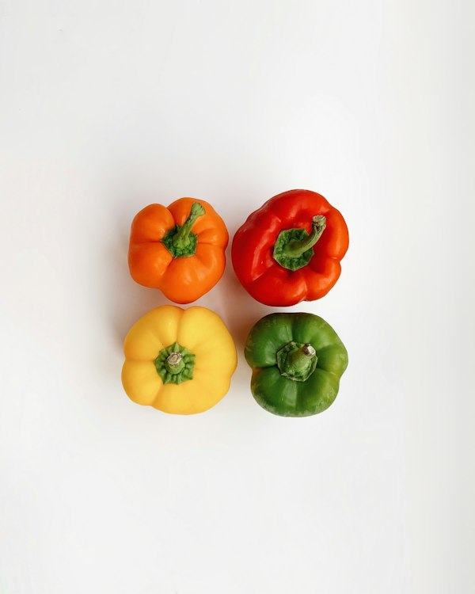
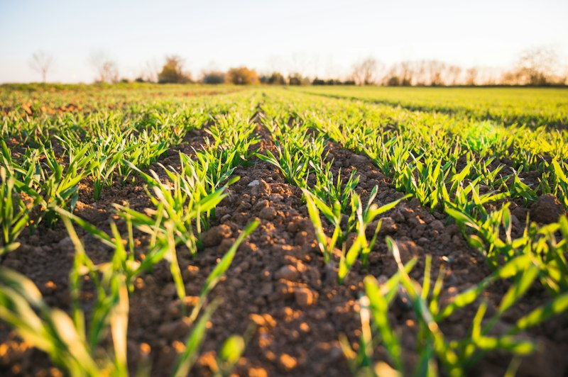

Detect Crop Diseases. Protect Your Harvest.
CropSense AI utilizes deep learning computer vision to diagnose crop foliage infections, calculate disease severity percentages, and empower farmers with rapid, actionable treatment recommendations.
Built For Modern Sustainable Agriculture
Comprehensive diagnostic tools engineered to empower growers, researchers, and agronomists with fast decision-making.
Rapid Leaf Diagnostics
Identify fungal, bacterial, and viral pathogens across foliage within seconds using computer vision pattern recognition.
Severity Calculation
Move beyond basic classification. Calculate the exact percentage of infected leaf surface to monitor disease progression.
Early Warning System
Catch chlorosis, blights, and spot symptoms before secondary spreading causes irreversible damage to crop yields.
Treatment Advisories
Receive balanced organic and chemical treatment advice along with preventive cultural practices for each diagnosis.
Mobile & Field Ready
Responsive interface optimized for smartphones and tablets so agronomists can diagnose plants directly in the field.
Multi-Crop Library
Trained across key staple grains, commercial vegetables, and fruit varieties to safeguard diverse farming systems.
Four Simple Steps to Healthier Crops
From leaf photograph to comprehensive treatment strategy in less than two minutes.
Capture Leaf Photo
Take a clear picture of the infected or suspicious plant leaf in natural lighting.
AI Visual Diagnosis
Deep convolutional neural networks analyze leaf lesions, discoloration, and patterns.
Severity Assessment
Automated image segmentation computes the precise percentage of damaged leaf area.
Take Targeted Action
Apply recommended biological or chemical remedies to preserve yield and stop spread.
Supported Agricultural Crops
Our diagnostic platform actively recognizes diseases across major staple and commercial crops.

ActiveTomato
Solanum lycopersicum
Potato
Solanum tuberosum

ActiveCorn / Maize
Zea mays

ActiveRice
Oryza sativa

ActiveWheat
Triticum aestivum

ActiveApple
Malus domestica

ActiveGrape
Vitis vinifera

ActiveBell Pepper
Capsicum annuum
Upload Leaf Image For Analysis
Upload a clear photo of an infected or healthy crop leaf to analyze disease category, health status, and severity percentage.
Drag and drop leaf image here
Supports high-resolution JPG, JPEG, and PNG files up to 10MB
AI-Driven Protection for Global Food Security
Harnessing state-of-the-art computer vision to empower farmers, reduce crop loss, and encourage sustainable agronomic practices.
What is Crop Disease Detection?
Crop disease detection is the automated identification of plant pathogens through visual examination of foliage, stems, and fruits. By digitizing morphological symptoms such as chlorosis, necrosis, and pustules, computational vision algorithms categorize diseases rapidly before symptoms spread widely across entire farm plots.
Why Early Detection Matters?
Plant diseases account for 20% to 40% of global agricultural harvest losses annually. Early detection allows localized micro-interventions, preventing catastrophic field-scale epidemic outbreaks, preserving farmer livelihoods, and drastically cutting unnecessary broad-spectrum chemical pesticide spraying.
How Deep Learning Helps Agriculture?
Deep Convolutional Neural Networks (CNNs) analyze thousands of visual features, color gradients, and lesion contours with greater consistency than manual scouting. Combined with semantic segmentation models (such as U-Net), AI calculates quantitative severity percentages rather than relying solely on subjective human guesses.
Project Mission & Objectives
CropSense AI aims to democratize agricultural diagnostics by providing accessible, zero-cost digital plant clinic capabilities to smallholder farmers and agronomists, bridging the gap between cutting-edge artificial intelligence and everyday agricultural challenges in the field.
Architecture & Technology Overview
The project is built on a clean, scalable separation between intuitive user-facing frontend applications and high-throughput machine learning inference pipelines.

Contact & Agronomic Feedback
Have questions about CropSense AI, suggestions for new crop types, or collaboration proposals? Reach out to our team.
Let's Connect
We welcome feedback from agricultural universities, research institutions, agronomists, and farming communities worldwide.